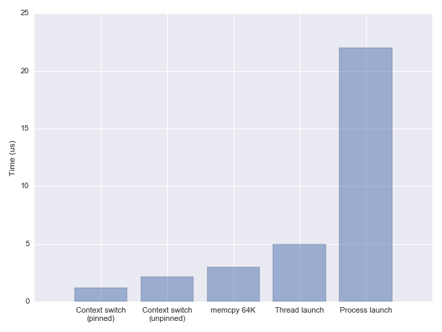

Ayke van Laethem
Implementing parallelism
How we added threading and multicore support to TinyGo
TL;DR
- Multicore support on Linux (threads)
- Multicore support on baremetal (RP2040, custom scheduler)
Concurrency != parallelism
Why now in TinyGo?
- New chips (RP2040)
- Linux (example: u-root)
- WebAssembly (stack switching is painful)
1:1 threading?
What needs to change?
- scheduler
- garbage collector
chan,select- package
sync - package
sync/atomic - misc:
println,runtime.NumCPU, etc
Futex!
What even is a futex?
Futex API
wait(address *atomic.Uint32, expected uint32)wakeOne(address *atomic.Uint32)wakeAll(address *atomic.Uint32)
// In the kernel:
var waitingThreads = make(map[*atomic.Uint32][]*OSThread)
func wait(address *atomic.Uint32, expected uint32) {
// do atomically:
if address.Load() == expected {
waitingThreads[address] = append(waitingThreads[address],
currentThread())
// and now wait until woken
}
}
| Platform | API |
|---|---|
| Linux | see futex(2) |
| MacOS | __ulock_wait2__ulock_wake
|
| Windows | WaitOnAddressWakeByAddressSingleWakeByAddressAll |
| WebAssembly | memory.atomic.waitmemory.atomic.notify |
More information:
https://outerproduct.net/futex-dictionary.html
Wrapped futex (TinyGo)
type Futex struct {
atomic.Uint32
}
func (f *Futex) Wait(expected uint32) {
wait(&f.Uint32, expected)
}
func (f *Futex) Wake() {
wakeOne(&f.Uint32)
}
func (f *Futex) WakeAll() {
wakeAll(&f.Uint32)
}
Baremetal futex?
type Futex struct {
atomic.Uint32
waiters Stack // linked list of waiting goroutines
}
func (f *Futex) Wait(expected uint32) {
spinlockTake()
if f.Load() == cmp {
f.waiters.Push(currentGoroutine())
spinlockRelease()
Pause()
} else {
spinlockRelease()
}
}
func (f *Futex) Wake() {
spinlockTake()
if t := f.waiters.Pop(); t != nil {
scheduleGoroutine(t)
}
spinlockRelease()
}
sync.WaitGroup
type WaitGroup struct {
futex Futex
}
func (wg *WaitGroup) Add(delta int) {
if wg.futex.Add(uint32(delta)) == 0 {
wg.futex.WakeAll()
}
}
func (wg *WaitGroup) Wait() {
for {
counter := wg.futex.Load()
if counter == 0 { break }
wg.futex.Wait(counter)
}
}
func (wg *WaitGroup) Done() {
wg.Add(-1)
}
Channels
// The runtime implementation of the Go 'chan' type.
type channel struct {
closed bool
selectLocked bool
elementSize uintptr
bufCap uintptr // 'cap'
bufLen uintptr // 'len'
bufHead uintptr
bufTail uintptr
senders chanQueue
receivers chanQueue
lock task.PMutex
buf unsafe.Pointer
}
select
var chan1 = make(chan int)
var chan2 = make(chan int)
func foo() {
select {
case <-chan1:
case chan2 <- 1: // deadlock!
}
}
func bar() {
select {
case chan2 <- 1:
case <-chan1: // deadlock!
}
}
RP2040
| Before | After |
|---|---|
Baremetal multicore
- Debug in QEMU!
- Scheduler: one scheduler per core
- GC: interrupt every other core (using software interrupt)
time.Sleep: one core sleeps, others wait until a new task arrives
Future work
- MacOS support (almost done)
- WebAssembly threads support
- ESP32 support (maybe)
- Performance improvements
Questions?
Slides:https://aykevl.nl/talks/2025-06-17-gopherconeu/
How to find me:
@ayke@hachyderm.io
@aykevl
@aykevl